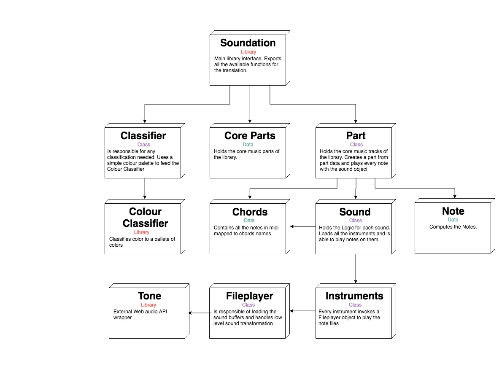

See it in action:

A library to hear what you cannot see
Soundation is a library that helps translating image to audio. This can be used to help visually impaired or colorblind people.
It has been developed as a mini project for my Thesis and was primarily build to test such scenario. It lacks a lot of features due to it's origin but it is
build with extensibility in mind.
See it in action:
See it in action:
Visually impaired
Visually impaired that use internet
Bpm manipulation based on color
Settings
0
Reset
Color sample
Bpm value
0
Track change based on color
Settings
0
Reset
Color sample
Track name
1 note
Key manipulation based on color
Settings
0
Reset
Color sample
Current Key
C#
